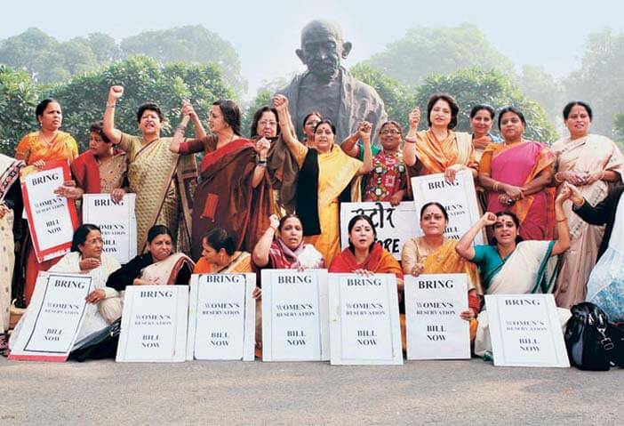
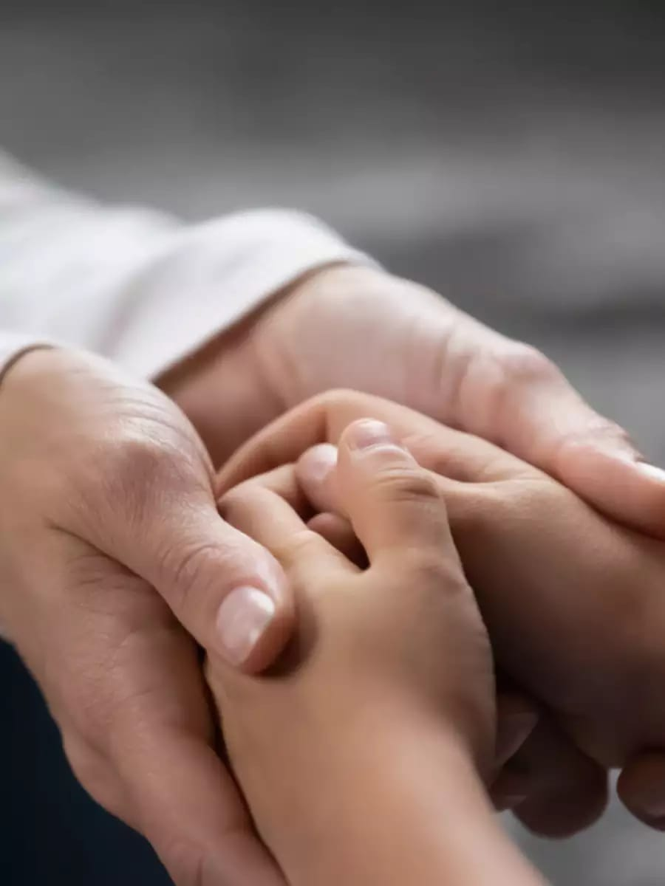
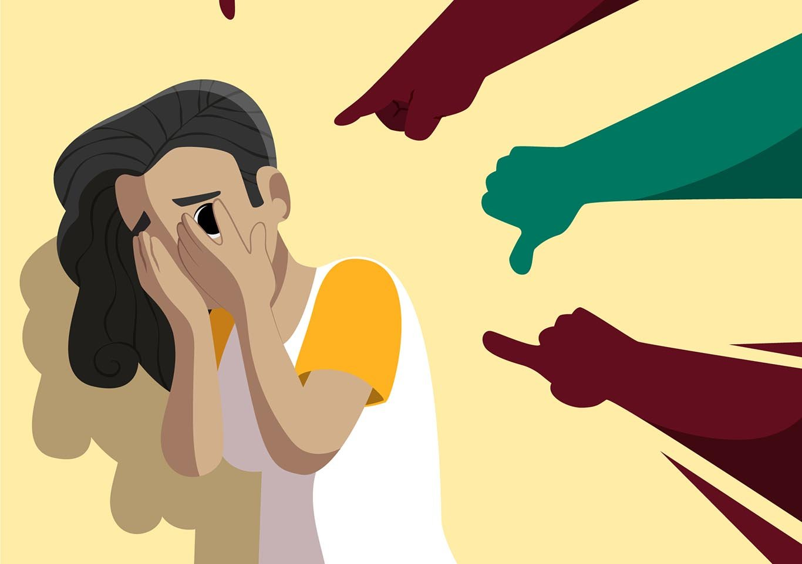
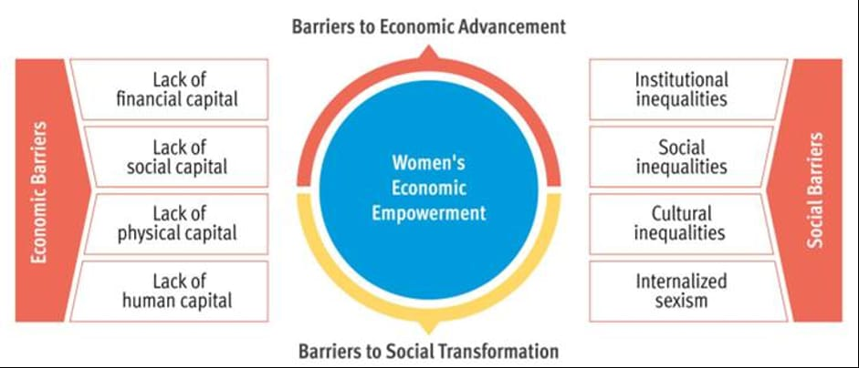

Women‘s empowerment in India is heavily dependent on many different variables that include geographical location (urban/rural), educational status, social status (caste and class), and age. Policies on women‘s empowerment exist at the national, state, and local (Panchayat) levels in many sectors, including health, education, economic opportunities, gender-based violence, and politicalparticipation. However, there are significant gaps between policy advancements and actual practiceat the community level. One key factor for the gap in implementation of laws and policies to address discrimination,economic disadvantages, and violence against women at the community level is the largelypatriarchal structure that governs the community and households in much of India. As such, womenand girls have restricted mobility, access to education, access to health facilities, and lower decision-making power, and experience higher rates of violence. Political participation is also hindered at thePanchayat (local governing bodies) level and at the state and national levels, despite existingreservations for women.
Good touch feels caring, like a pat on the head, back, or a bear hug. In comparison, a bad touch can hurt your body or feelings, such as pinching, hitting, or touching any private area. Let children know that it's ok to say no if you don't like any touch, even from a friend or a family member.Good touch is any kind of physical contact that makes someone feel safe and comfortable. This can include hugs, high-fives, and pats on the back. On the other hand, bad touch is any kind of physical contact that makes someone feel uncomfortable or scared.
Victim-blaming norms and violence against women: Moral considerations can induce policy and behaviour change Sevinc Bermek Asli Unan / 8 Mar 2024 Violence against women entails great psychological, physical, and socioeconomic costs. Prevailing victim-blaming norms are an impediment to social change. This column uses an experiment to uncover the different behavioural mechanisms that drive policy and attitudinal change and are working in a complementary fashion. The findings are good news for introducing welfare-improving social change as they suggest a stepping-stone approach to changing policy and norms regarding gender-based violence.
Harassment at work place: work place harassment is the belittling or threatening behaviour at an individual worker or a group of workers Sexual harrasment is a form of sex discrimination that occurs in the workplace.The legal definition of sexual harrasment is " Unwelcome verbal,visual,or physical conduct of a sexual nature that is severe or pervasive and affect wapking conditions or creates a hostile work environment."
The report defines economic violence as “any action or omission aimed at economic abuse or abusive control of finances, monetary rewards, or punishments of women due to their social, economic, or political condition.” Economic violence can occur in partner, family, work, or economic relationships. While gender-based violence is often associated with physical or sexual acts, economic violence is a critically important part of the picture.
I have taken permission in schools in near by areas to give awareness to students about crime against women.we make a PPT to rising awareness to the students.concerted action is needed to end violence against women and girls.Whether you're talking to your friends and family, or engaging with an advocacy organization, the most important way to be an advocate is speaking up. By raising your voice for women's rights and gender equality, you can spread awareness and break down barriers.

Women are having the power to change the world. A strong woman wears their pain like they do stilettos. The prevention, elimination and reduction of women again violence must be done by understanding and anticipating the gender impacts of various political and economic policies and forces. And the major treatment and prevention interventions, such as child maltreatment systems, casework, protective orders, and health care the victims of domestic violence, battered women’s shelters, elder abuse interventions, of all the types, have not been the subjects of rigorous evaluation studies. All the men and boys should respect girls and women in schools, in colleges, in workplaces, places of worships, at home and the streets.